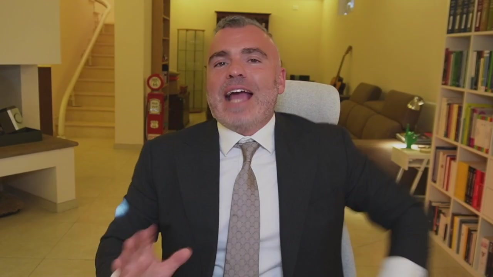
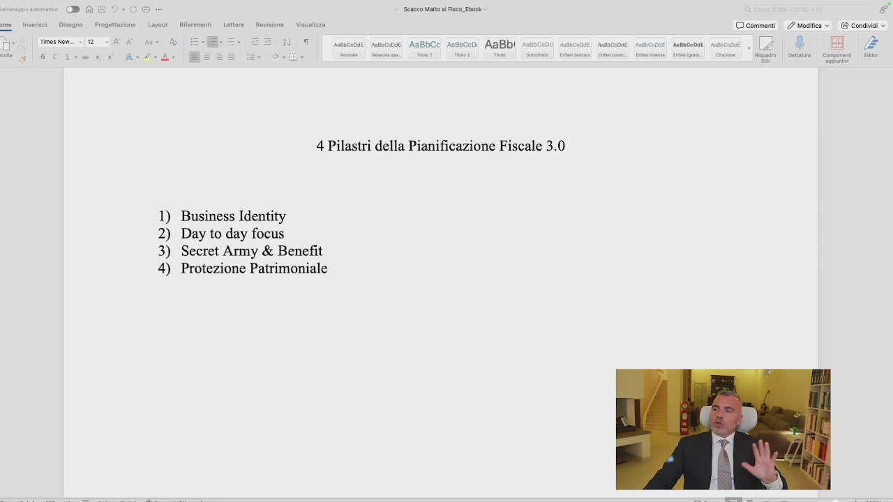
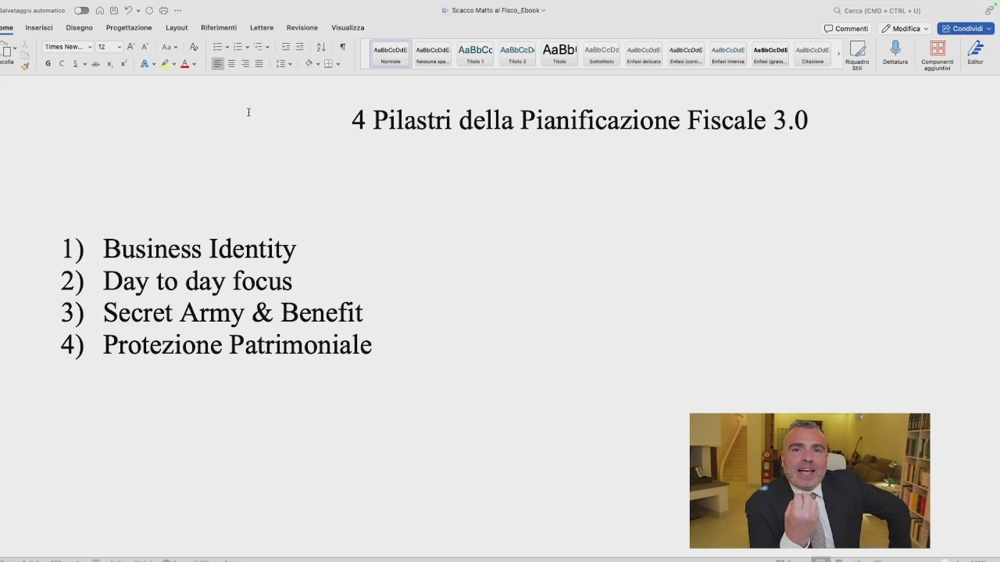
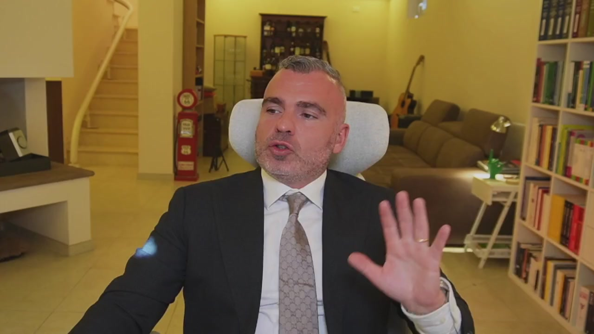
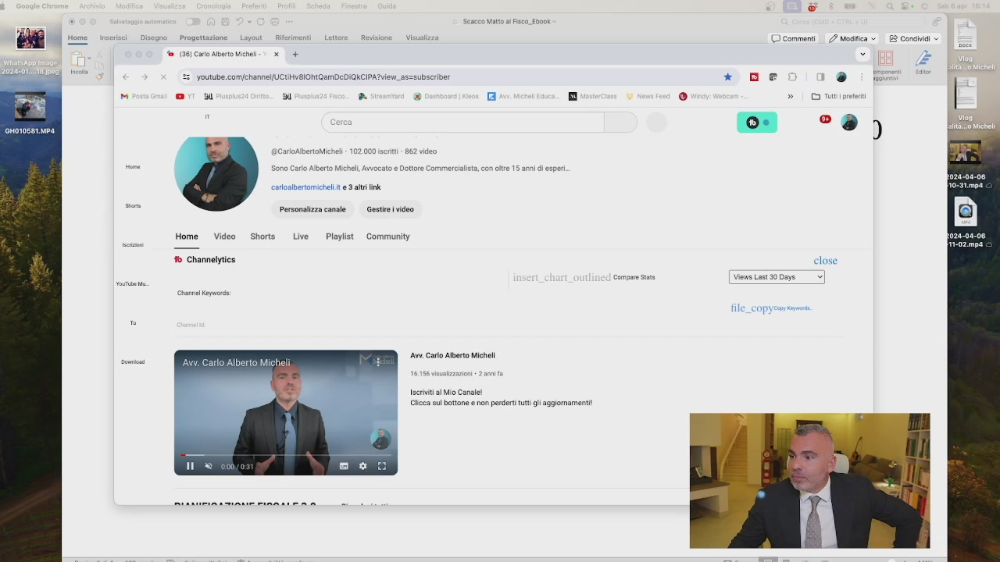
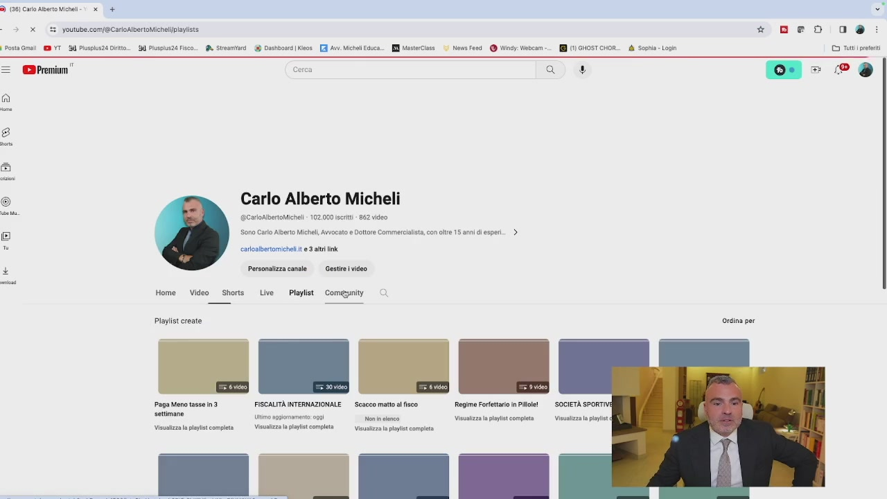
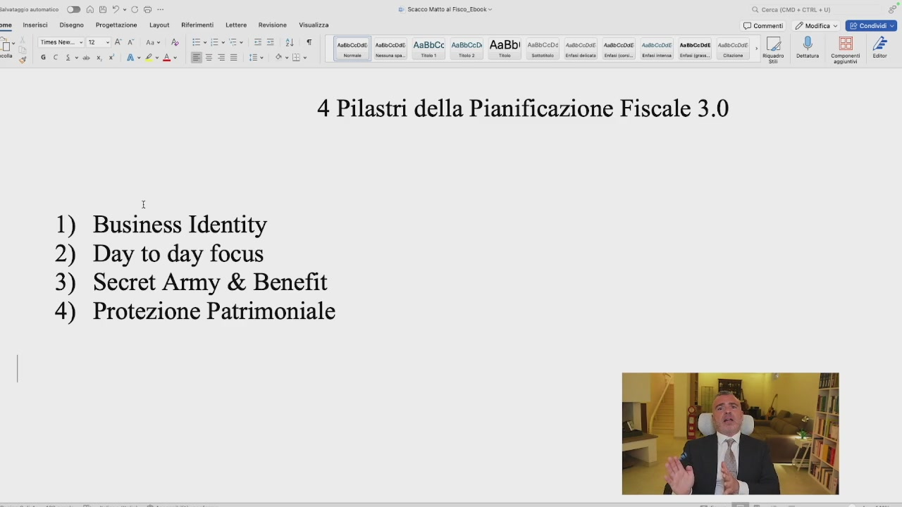
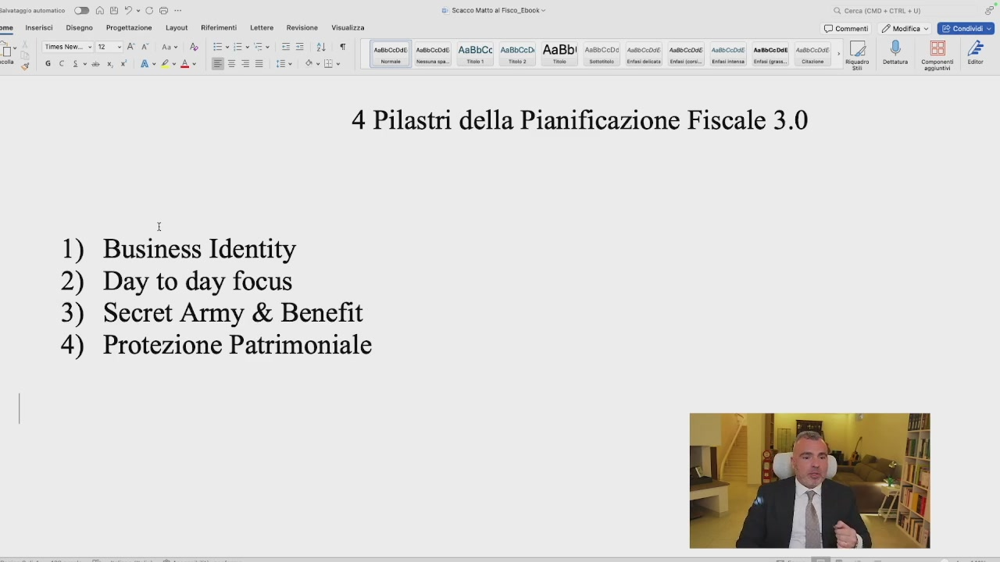
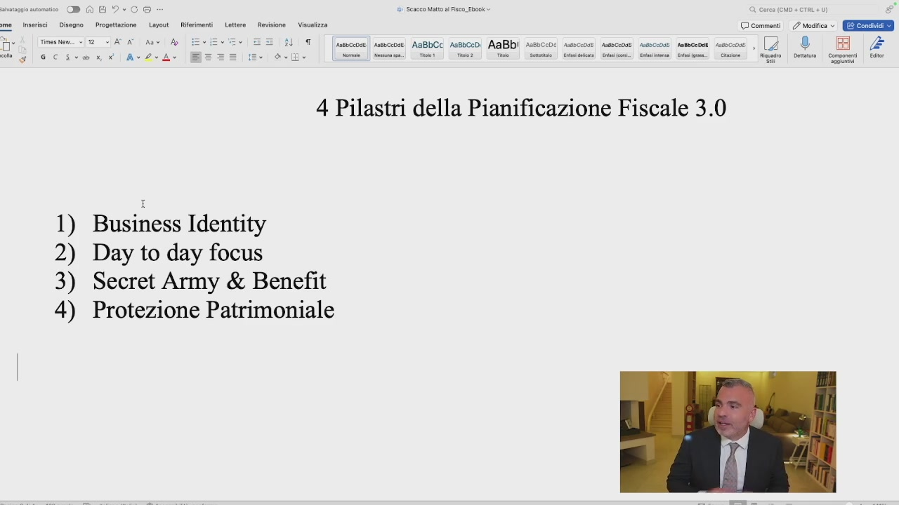

Ecco allora che siamo in grado di individuare quali sono i quattro pilastri della pianificazione fiscale costruita da me. Questi quattro pilastri saranno necessari per poter comprendere qual è il vostro stadio di ottimizzazione fiscale. Non devo riservare sorprese, i quattro pilastri sono questi, la business identity, il day to day focus,

OCR: Seco Matt al Fisco Ebok Ca Disegno CO commenti |. / Mogiic >. Condivai > AaBbi sesvcc 4 Pilastri della Pianificazione Fiscale 3.0 1) Business Identity 2) Day to day focus 3) Secret Army & Benefit 4) Protezione Patrimoniale
il sistema dei benefit e la protezione patrimoniale. La business identity è semplicemente sapere se siamo correttamente inquadrati dal punto di vista giuridico. Se siamo in ditta individuale con collaboratori familiari va bene, se siamo in snc va bene, se siamo in sas va bene, se siamo in srl va bene, se siamo in srl con sistema di holding va bene, se siamo in srl con sistema di holding e presenza di società semplici va bene. Sulla base quindi delle caratteristiche oggettive e soggettive della tua azienda dovrai andare a capire se la tua situazione va bene.
OCR: 4 Pilastri della Pianificazione Fiscale 3.0 1) Business Identity 2) Day to day focus 3) Secret Army & Benefit 4) Protezione Patrimoniale
Emma insegnami. Ecco forse la business identity è quella che difficilmente io posso insegnare, perché per farlo posso segnalarti dei contenuti molto interessanti che sono gratuiti su youtube, che sono il mio metodo performa che è completamente gratis su youtube e i corsi partitaiva start e aprire partitaiva che sono playlist gratuite su youtube. Perché? Perché per spiegare la differenza che c'è tra una ditta individuale, un snc, una sas e un srl ci vorrebbero, non lo so, per fare un lavoro fatto bene almeno 15-20 ore di corso, ma potrebbe essere anche eccessivamente difficile. Quindi quello che dobbiamo capire adesso è, ho le informazioni tali per cui posso

OCR: AaBbCc assbce0; AaBbi asssca ! 4 Pilastri della Pianificazione Fiscale 3.0 1) Business Identity 2) Day to day focus 3) Secret Army & Benefit 4) Protezione Patrimoniale
sapere se sono correttamente inquadrato? Sì? No? E se no a chi mi rivolgo? E se le informazioni sono esaustive? Basate sui numeri o frutto di un'opinione? Basta, non vi serve sapere altro. Poi vi segnalo veramente queste playlist che ho il piacere di condividere con voi, ve le faccio vedere, potete tranquillamente

andare sul mio canale youtube, risorse assolutamente gratuite che voi potrete potrete trovare, quindi condividiamo la pagina, eccola qua, quindi andate sul mio canale youtube, trovate pianificazione fiscale,

OCR: ° Sono Carl Alberto Micheli, Awocato e Dottore Commerciali caoibertomicheli. e 3 tri ink + youtube confchannel/UCtiHVSIONIQAmDCDIGKCIPA?view_a Personalizza canale Home. Video | Shorts 4% Channelytics Avv. Carlo Alberto Micheli, Live Playlist DS Gestire video Community Avv Carlo Alberto Micheli Iscrivi al Mio Cone Clicca su bottone e non perder tutt li aggiomamentti © commenti Vie Last 30 Daye 2 Modifica © È Condivdi ©
altre situazioni, pagare meno tasse, andate qua, apertura partitaiva, ci sono diverse informazioni e poi nelle playlist, se voi andate nelle playlist

OCR: Ò) (8) Caro Alberto Micheli: x + i; x. (F5. youtube com/@CarloAlbertoMichelpiaylsts * do 0a Pata Gr YT 94 Pluspls24 Dito. Paspus24 Fisco. A Stwsmiard_ Dashbasra|Keos [RA Michel Foca. Mastrciats 3 Now Feed @ Why Webcam. I (1) GHOST CHOR fb Sophia Login Cr iprteni Premium” Cerca DD). fa * 209 Gi + © Carlo Alberto Micheli ente @CarloAlbertoMicheli » 102.000 iscritti + 862 video o I Home Video Shorts Live Playlist: Comunity Playlist create ordina per Paga Meno tsse in3 FISCALITÀ INTERNAZIONALE — Scacco matt al fisco Regime Fofettaio in Pilboe! settimane Uto spgomamento: gg Nene Visuizz a pit completa Visualizza a pls completa Visuntzzal plylst completi Visualizza plpist completa
trovate il metodo performa che c'è, parte da qua, modulo 1, 2, performa numero 1, 2, 3, 4, 5, 6, 7, 8, soprattutto performa 2 e 3 sono forse il metodo performa 2, però difficilmente lo capite se non lo guardate tutto, quindi nelle playlist performa trovate le informazioni che vi possono servire per comprendere meglio la business identity. Quello che vi ho detto qui al momento è sufficiente. Day to day focus, quali sono le azioni giornaliare che io vado a fare, sto applicando correttamente le trasferte, sto applicando correttamente rimborsi chilometrici, sto applicando correttamente le spese di rappresentanza, sto applicando correttamente le spese pubblicitarie, sto applicando una strategia social, sto applicando gli accantonamenti nel modo corretto, sto
OCR: AaBbCc asssceì AaBbi asssca 4 Pilastri della Pianificazione Fiscale 3.0 1) Business Identity 2) Day to day focus 3) Secret Army & Benefit 4) Protezione Patrimoniale
applicando correttamente un sistema di benefit, queste sono le informazioni del day to day focus, cioè un'attenzione sulle azioni che io ogni giorno già faccio nella mia azienda, ma sto facendo nella mia azienda una serie di azioni, queste azioni le sto facendo anche in ottica di risparmio fiscale o diversamente, le azioni che metto in piedi potrebbero avere dei risvolti fiscali tali per cui ho un vantaggio dal punto di vista del risparmio delle imposte? Sì, no, perché lo so, sono consapevole, perché se non sono consapevole sto buttando via soldi, e infine sistemi di protezione patrimoniale, c'è una corretta separazione dei miei beni e della mia azienda? I miei beni

OCR: 4 Pilastri della Pianificazione Fiscale 3.0 1) Business Identity 2) Day to day focus 3) Secret Army & Benefit 4) Protezione Patrimoniale AsBbCc suscedi AaBbI Assocco: seccare sumsccose mescense samcsnsi escort, [4
sono protetti da eventuali ripercussioni che possono accadere nella mia azienda? Ho dei beni da tutelare che al momento non sto tutelando? Questi sono i quattro pilastri della pianificazione fiscale, non c'è il segreto di Fatima e di chissà cosa. Come si attua una protezione patrimoniale corretta? Conosco il fondo patrimoniale? Per il mio caso, visto che ho delle collezioni o dei beni o delle ripercussioni che potrebbero essere divise in fase ereditaria, potrebbe fare al caso mio un trust? Ho bisogno di proteggere la mia numerosa famiglia e l'azienda è una sola, posso valutare una società semplice? A chi devo rivolgermi? Al geometra? Al commercialista? Al notaio? Generalmente per la protezione patrimoniale ci si rivolge all'avvocato

OCR: AaBbCc sssbce0; AaBbi asseca 4 Pilastri della Pianificazione Fiscale 3.0 1) Business Identity 2) Day to day focus 3) Secret Army & Benefit 4) Protezione Patrimoniale
che fa protezione patrimoniale o al notaio, mentre per un sistema di benefit, di welfare, di azioni giornaliere, al commercialista, alla business identity, al commercialista, al notaio, forse al commercialista e all'avvocato magari. Il notaio poi è quello che sostanzialmente dà giuridicità, dà veste giuridica alle scelte che l'imprenditore fa, è sempre una figura super partes che però deve essere presente e della quale non dobbiamo avere paura. Qua, nella mia libreria, ci sono tutte le collane notarili e i manuari notarili, perché io sono appassionato di queste materie e vi garantisco che nel commercialista e nell'avvocato li studia quelle cose, almeno che non sia un folle come me che si compra 3.000 Euro di collane notarili e la mattina alle 5 sta lì e se le legge o frequenta addirittura corsi con i notai che mi guardano e mi chiedono che ci fai qui. Partecipo, mi formo, questi sono i pilastri

OCR: AaBbCc assbced; AaBbi asssca 4 Pilastri della Pianificazione Fiscale 3.0 1) Business Identity 2) Day to day focus 3) Secret Army & Benefit 4) Protezione Patrimoniale
della pianificazione fiscale e ora entriamo proprio con le tecniche e le strategie vincenti nel modulo 3, prima però vi voglio dare qualche consiglio su cosa non devi fare e per evitare appunto, su cosa non devi fare altrimenti arrivano i controlli fiscali, lo vediamo nella prossima lezione.